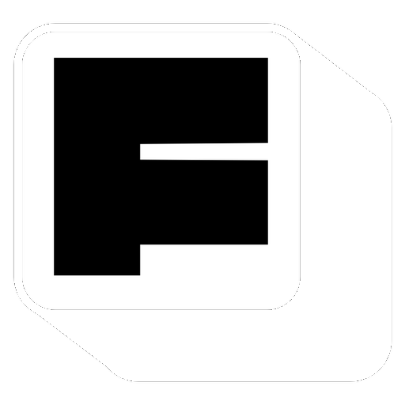

← 홈
☰
최근 프로젝트
+
🗑 휴지통

Freedom AI
가
🔗 공유
EN
오프라인
로그아웃
−
100%
+
초기화
P: 펜 · E: 지우개 · S: 포스트잇 · R: 도형 · H: 이동 · Ctrl+Z: 실행취소
AI 이미지 변환
영어로 입력하면 더 잘 됩니다
예) watercolor style, cartoon, oil painting, sketch
취소
✦ AI 변환
Freedom AI
시작하려면 로그인하세요
Google로 로그인
게스트로 입장
Freedom AI
프로젝트 이름을 입력하세요
입장하기 →
최근 프로젝트
팀원 초대
×
이 링크를 팀원에게 보내면 함께 작업할 수 있어요
복사
🔓 공개 프로젝트 — 링크만 있으면 누구나 입장 가능
비공개로 전환
초대된 팀원
지금 함께하는 팀원